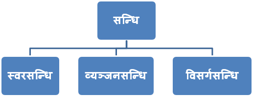
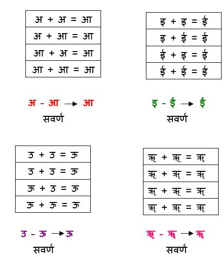
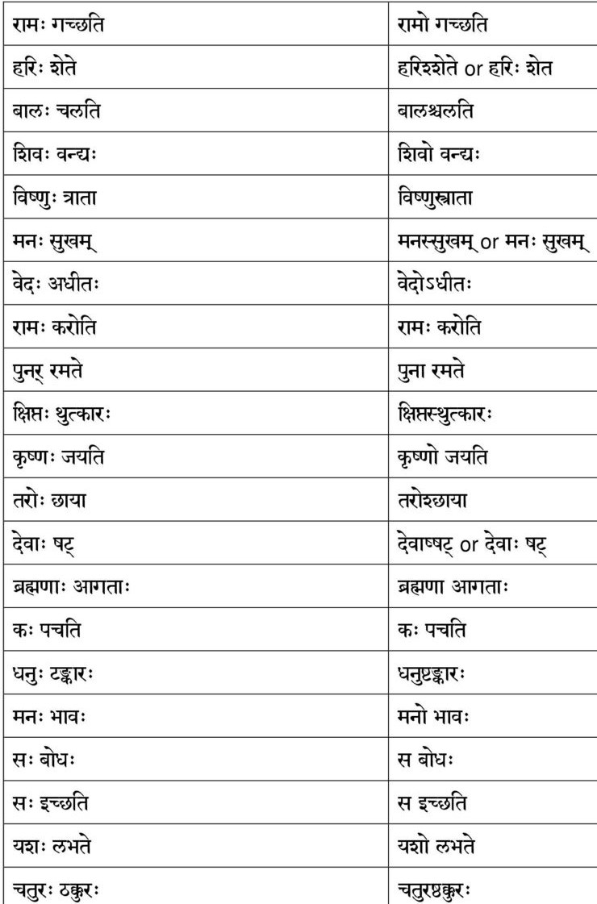

सन्धिः सन्धि शब्द की व्युत्पत्ति – सम् उपसर्ग पूर्वक डुधाञ् (धा) धातु से “उपसर्गे धोः किः” सूत्र से ‘कि’ प्रत्यय करने पर ‘सन्धि’ शब्द निष्पन्न होता है।
सन्धि की परिभाषा – वर्ण सन्धान को सन्धि कहते हैं। अर्थात् दो वर्गों के परस्पर के मेल अथवा सन्धान को सन्धि कहा जाता है। पाणिनीय परिभाषा – “परः सन्निकर्षः संहिता” अर्थात् वर्णों की अत्यधिक निकटता को संहिता कहा जाता है। जैसे—’सुधी + उपास्य’ यहाँ ‘ई’ तथा ‘उ’ वर्गों में अत्यन्त निकटता है। इसी प्रकार की वर्गों की निकटता को संस्कृत – व्याकरण में संहिता कहा जाता है। संहिता के विषय में ही सन्धि – कार्य होने पर ‘सुध्युपास्य’ शब्द की सिद्धि होती है।
जब दो स्वरों का सन्धान अथवा मेल होता है, तब वह सन्धान स्वर – सन्धि या अच् सन्धि कही जाती है। यहाँ अच् – सन्धि में स्वर के स्थान पर आदेश होता है। स्वर – सन्धियाँ आठ प्रकार की होती हैं। जैसे –
 GO BACKव्यंजन के साथ व्यंजन या स्वर का मेल होने से जो विकार होता है, उसे व्यंजन सन्धि कहते हैं। व्यंजन सन्धि के प्रमुख नियम इस प्रकार हैं-
यदि स्पर्श व्यंजनों के प्रथम अक्षर अर्थात् क्, च्, ट्, त्, के आगे कोई स्वर अथवा किसी वर्ग का तीसरा या चौथा वर्ण अथवा य, र, ल, व आए तो क.च.ट. त. पके स्थान पर उसी वर्ग का तीसरा अक्षर अर्थात क के स्थान पर ग, च के स्थान पर ज, ट के स्थान पर ड, त के स्थान पर द और प के स्थान पर ‘ब’ हो जाता है जैसे-
जब विसर्ग के स्थान पर कोई भी परिवर्तन होता है, तब उसे विसर्ग – सन्धि कहा जाता है। विसर्गों का प्रयोग संस्कृत को छोड़कर संसार की किसी भी भाषा में नहीं होता है। हिन्दी में भी विसर्गों का प्रयोग नहीं के बराबर होता है। कुछ इने-गिने विसर्गयुक्त शब्द हिन्दी में प्रयुक्त होते हैं;
 GO BACK